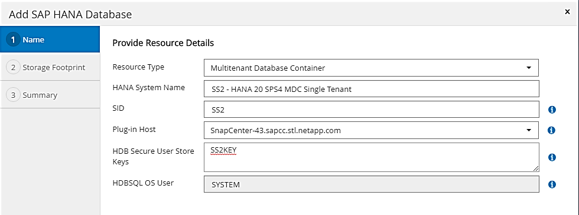
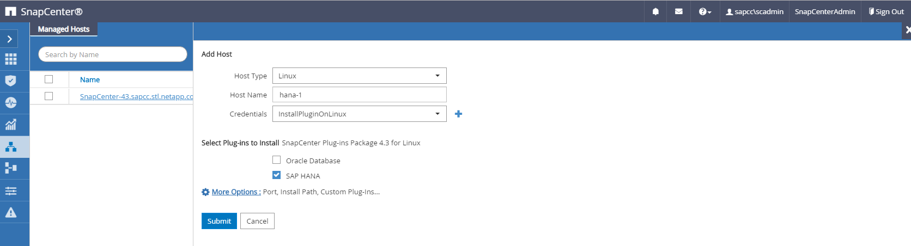
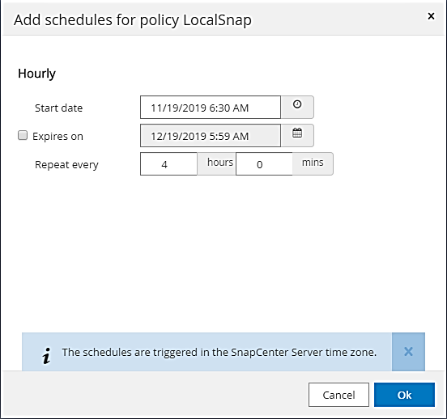
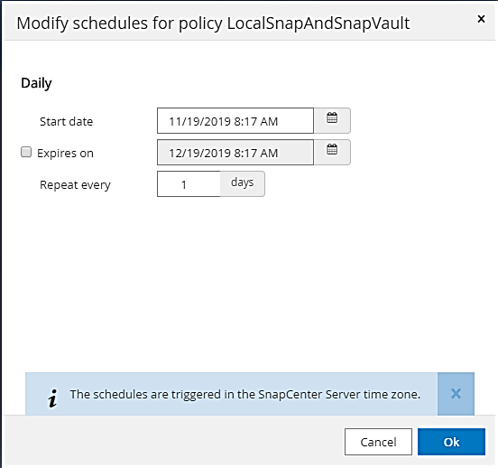
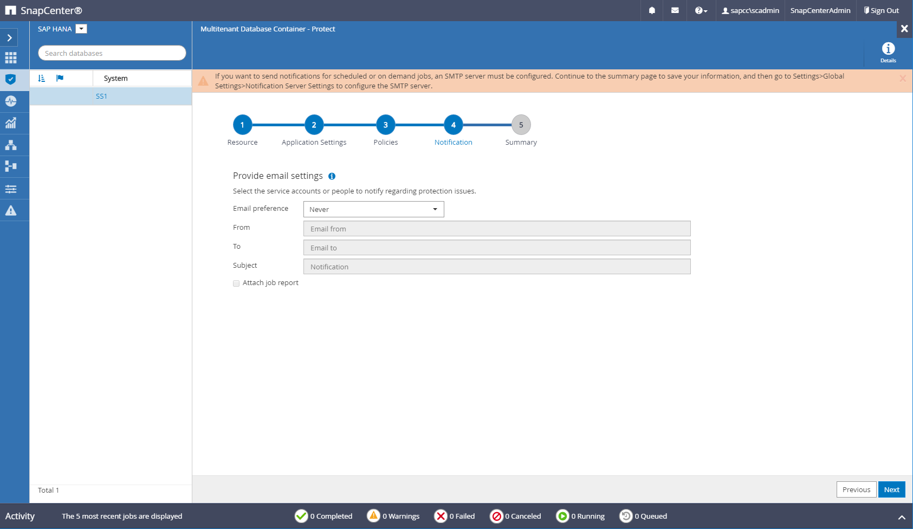

ドキュメントの変更をリクエスト
ドキュメントの変更をリクエスト GitHub で編集
GitHub で編集 寄稿者向けガイド
寄稿者向けガイドSAP HANA データベースのバックアップ用の SnapCenter リソース固有の構成
ここでは、 2 つの設定例の設定手順について説明します。
-
* SS2.*
-
ストレージアクセスに NFS を使用するシングルホスト SAP HANA MDC のシングルテナントシステム
-
リソースは SnapCenter で手動で設定されます。
-
リソースは、週単位のファイルベースのバックアップを使用して、 SAP HANA データベースのローカル Snapshot バックアップを作成し、ブロック整合性チェックを実行するように設定されています。
-
-
* SS1.*
-
ストレージアクセスに NFS を使用するシングルホスト SAP HANA MDC のシングルテナントシステム
-
リソースは SnapCenter で自動検出されます。
-
リソースは、ローカル Snapshot バックアップを作成し、 SnapVault を使用してオフサイトのバックアップストレージにレプリケートし、週 1 回のファイルベースのバックアップを使用して SAP HANA データベースのブロック整合性チェックを実行するように設定されます。
-
SAN 接続、シングルコンテナ、またはマルチホストシステムの違いは、対応する設定またはワークフローの手順に反映されます。
SAP HANA のバックアップユーザと hdbuserstore の設定を指定します
SnapCenter でバックアップ処理を実行するには、 HANA データベースに専用のデータベースユーザを設定することを推奨します。2 番目の手順では、このバックアップユーザ用に SAP HANA ユーザストアキーが設定され、このユーザストアキーは SnapCenter SAP HANA プラグインの構成で使用されます。
次の図は、バックアップユーザの作成に使用できる SAP HANA Studio を示しています。

|
必要な権限は、 HANA 2.0 SPS5 リリースで変更されています。 backup admin 、 catalog read 、 database backup admin 、および database recovery operator以前のリリースの場合は、バックアップ管理者とカタログの読み取りで十分です。 |
|
|
SAP HANA MDC システムの場合は、システムデータベース内にユーザを作成する必要があります。これは、システムデータベースを使用してシステムとテナントデータベースのバックアップコマンドがすべて実行されるためです。 |

SAP HANA プラグインと SAP hdbsql クライアントがインストールされている HANA プラグインホストで、 userstore キーを設定する必要があります。
中央の HANA プラグインホストとして使用される SnapCenter サーバでのユーザストア設定
SAP HANA プラグインと SAP hdbsql クライアントが Windows にインストールされている場合、ローカルシステムユーザーは hdbsql コマンドを実行し、デフォルトでリソース設定に設定されます。システムユーザはログオンユーザではないため、ユーザストア設定は別のユーザと「 -u <User>` 」オプションを使用して行う必要があります。
hdbuserstore.exe -u SYSTEM set <key> <host>:<port> <database user> <password>
|
|
まず、 SAP HANA hdbclient ソフトウェアを Windows ホストにインストールする必要があります。 |
Central HANA プラグインホストとして使用される別の Linux ホストでのユーザストア設定
SAP HANA プラグインと SAP hdbsql クライアントが別の Linux ホストにインストールされている場合は、リソース設定で定義されているユーザのストア設定に次のコマンドが使用されます。
hdbuserstore set <key> <host>:<port> <database user> <password>
|
|
まず、 SAP HANA hdbclient ソフトウェアを Linux ホストにインストールする必要があります。 |
HANA データベースホスト上のユーザストア設定
SAP HANA プラグインが HANA データベースホストに導入されている場合、ユーザストア設定には次のコマンドが使用されます。ユーザ名は「 sid>adm 」です。
hdbuserstore set <key> <host>:<port> <database user> <password>
|
|
SnapCenter は、「 <sid>adm 」ユーザを使用して HANA データベースと通信します。したがって、ユーザストアキーは、データベースホスト上の <%sid>adm` ユーザを使用して設定する必要があります。 |
|
|
通常、 SAP HANA hdbsql クライアントソフトウェアは、データベースサーバのインストールと一緒にインストールされます。そうでない場合は、先に hdbclient をインストールする必要があります。 |
ユーザストアの構成は、 HANA システムのアーキテクチャに応じて異なります
SAP HANA MDC のシングルテナント構成では、ポート「 3 」はシステムデータベースへの SQL アクセス用の標準ポートであり、 hdbuserstore 構成で使用する必要があります。
SAP HANA シングルコンテナ設定の場合、ポート「 3<instanceNo>15 」はインデックスサーバへの SQL アクセス用の標準ポートであり、 hdbuserstore 設定で使用する必要があります。
SAP HANA マルチホストを設定する場合は、すべてのホストのユーザストアキーを設定する必要があります。SnapCenter は指定された各キーを使用してデータベースへの接続を試みます。そのため、異なるホストへの SAP HANA サービスのフェイルオーバーとは独立して動作します。
Userstore の構成例
このラボ環境では、 SAP HANA プラグインが混在した環境を使用します。HANA プラグインは、一部の HANA システムの SnapCenter サーバにインストールされ、他のシステムの個々の HANA データベースサーバに導入されます。
-
SAP HANA システム SS1 、 MDC のシングルテナント、インスタンス 00 *
HANA プラグインがデータベースホストに導入されている。したがって ' キーは 'ss1adm というユーザを持つデータベース・ホストで構成する必要があります
hana-1:/ # su - ss1adm ss1adm@hana-1:/usr/sap/SS1/HDB00> ss1adm@hana-1:/usr/sap/SS1/HDB00> ss1adm@hana-1:/usr/sap/SS1/HDB00> hdbuserstore set SS1KEY hana-1:30013 SnapCenter password ss1adm@hana-1:/usr/sap/SS1/HDB00> hdbuserstore list DATA FILE : /usr/sap/SS1/home/.hdb/hana-1/SSFS_HDB.DAT KEY FILE : /usr/sap/SS1/home/.hdb/hana-1/SSFS_HDB.KEY KEY SS1KEY ENV : hana-1:30013 USER: SnapCenter KEY SS1SAPDBCTRLSS1 ENV : hana-1:30015 USER: SAPDBCTRL ss1adm@hana-1:/usr/sap/SS1/HDB00>
-
SAP HANA システム MS1 、マルチホスト MDC のシングルテナント、インスタンス 00 *
HANA マルチホストシステムの場合、 SnapCenter サーバを使用したセットアップでは、中央のプラグインホストが必要です。そのため、ユーザストア設定は SnapCenter サーバ上で行う必要があります。
hdbuserstore.exe -u SYSTEM set MS1KEYHOST1 hana-4:30013 SNAPCENTER password hdbuserstore.exe -u SYSTEM set MS1KEYHOST2 hana-5:30013 SNAPCENTER password hdbuserstore.exe -u SYSTEM set MS1KEYHOST3 hana-6:30013 SNAPCENTER password C:\Program Files\sap\hdbclient>hdbuserstore.exe -u SYSTEM list DATA FILE : C:\ProgramData\.hdb\SNAPCENTER-43\S-1-5-18\SSFS_HDB.DAT KEY FILE : C:\ProgramData\.hdb\SNAPCENTER-43\S-1-5-18\SSFS_HDB.KEY KEY MS1KEYHOST1 ENV : hana-4:30013 USER: SNAPCENTER KEY MS1KEYHOST2 ENV : hana-5:30013 USER: SNAPCENTER KEY MS1KEYHOST3 ENV : hana-6:30013 USER: SNAPCENTER KEY SS2KEY ENV : hana-3:30013 USER: SNAPCENTER C:\Program Files\sap\hdbclient>
オフサイトのバックアップストレージにデータ保護を設定する
SnapCenter でレプリケーションの更新を管理するには、データ保護関係および最初のデータ転送の設定を実行する必要があります。
次の図は、 SAP HANA システム SS1 用に設定された保護関係を示しています。この例では、 SVM 「 HANA プライマリ」のソースボリューム「 SS1_data_mnt00001 」が SVM 「 HANA - バックアップ」とターゲットボリューム「 SS1_data_mnt00001_dest 」にレプリケートされます。
|
|
SnapCenter によって SnapVault の更新がトリガーされるため、関係のスケジュールは None に設定する必要があります。 |

次の図に、保護ポリシーを示します。保護関係に使用される保護ポリシーでは、セカンダリストレージでのバックアップの保持に加え、 SnapMirror ラベルも定義されます。この例では ' 使用されているラベルは毎日 ' 保存期間は 5 に設定されています
|
|
作成するポリシーの SnapMirror ラベルは、 SnapCenter ポリシーの設定で定義されたラベルと一致する必要があります。詳細については、「」を参照してください[Policy for daily Snapshot backups with SnapVault replication]」 |
|
|
オフサイトのバックアップストレージでのバックアップの保持は、ポリシーに定義され、 ONTAP によって制御されます。 |

HANA のリソースを手動で構成
このセクションでは、 SAP HANA リソース SS2 と MS1 を手動で設定する方法について説明します。
-
SS2 は、シングルホスト MDC のシングルテナントシステムです
-
MS1 は、マルチホスト MDC のシングルテナントシステムです。
-
リソースタブで、 SAP HANA を選択し、 SAP HANA データベースの追加をクリックします。
-
SAP HANA データベースを設定するための情報を入力し、 Next （次へ）をクリックします。
この例では、マルチテナントデータベースコンテナのリソースタイプを選択します。
HANA シングルコンテナシステムの場合は、リソースタイプとしてシングルコンテナを選択する必要があります。他の設定手順はすべて同じです。 SAP HANA システムの場合、 SID は SS2 です。
この例の HANA プラグインホストは、 SnapCenter サーバです。
hdbuserstore キーは、 HANA データベース SS2 用に設定されたキーと一致している必要があります。この例では、 SS2KEY です。

SAP HANA マルチホストシステムの場合、次の図に示すように、すべてのホストの hdbuserstore キーを含める必要があります。SnapCenter は、リストの最初のキーとの接続を試行し、最初のキーが機能しない場合には、他のケースとの接続を続行します。これは、ワーカーホストとスタンバイホストを使用するマルチホストシステムで HANA フェイルオーバーをサポートするために必要です。 
-
ストレージシステム（ SVM ）とボリューム名に必要なデータを選択します。

ファイバチャネル SAN 構成の場合は、 LUN も選択する必要があります。
SAP HANA マルチホストシステムの場合は、次の図に示すように、 SAP HANA システムのすべてのデータボリュームを選択する必要があります。 
リソース構成の概要画面が表示されます。
-
Finish をクリックして、 SAP HANA データベースを追加します。

-
リソース構成が完了したら、「」の説明に従って、リソース保護の構成を実行します[Resource protection configuration]」
-
HANA データベースの自動検出
このセクションでは、 SAP HANA リソース SS1 （ NFS を使用するシングルホスト MDC シングルテナントシステム）の自動検出について説明します。ここで説明する手順はすべて、 HANA シングルコンテナ、 HANA MDC マルチテナントシステム、およびファイバチャネル SAN を使用する HANA システムで同じです。
|
|
SAP HANA プラグインには、 Java 64 ビットバージョン 1.8 が必要です。SAP HANA プラグインを導入する前に、ホストに Java をインストールする必要があります。 |
-
ホストタブで、追加をクリックします。
-
ホスト情報を入力し、インストールする SAP HANA プラグインを選択します。Submit をクリックします。

-
フィンガープリントを確認します。

HANA プラグインと Linux プラグインのインストールが自動的に開始されます。インストールが完了すると、ホストの status 列に running と表示されます。画面には、 Linux プラグインが HANA プラグインと一緒にインストールされていることも表示されます。

プラグインのインストール後、 HANA リソースの自動検出プロセスが自動的に開始されます。[ リソース ] 画面で、新しいリソースが作成されます。このリソースは、赤い南京錠のアイコンでロックされていることが示されます。
-
を選択し、をクリックして設定を続行します。
[ リソースの更新 ] をクリックして、 [ リソース ] 画面で自動検出プロセスを手動で開始することもできます。 
-
HANA データベースのユーザストアキーを指定します。

第 2 レベルの自動検出プロセスでは、テナントのデータとストレージのフットプリントの情報が検出されます。
-
Details をクリックして、リソーストポロジビューで HANA リソース構成情報を確認します。


リソース構成が終了したら ' 次のセクションの説明に従ってリソース保護構成を実行する必要があります
リソース保護の設定
ここでは、リソース保護の設定について説明します。リソースが自動検出されたか手動で設定されたかに関係なく、リソース保護の設定は同じです。また、すべての HANA アーキテクチャ、単一または複数のホスト、単一コンテナ、 MDC システムでも同じです。
-
[ リソース ] タブで、リソースをダブルクリックします。
-
Snapshot コピーにカスタムの名前形式を設定します。
カスタムの Snapshot コピー名を使用して、どのバックアップがどのポリシーおよびスケジュールタイプで作成されたかを簡単に識別することを推奨します。Snapshot コピー名にスケジュールタイプを追加することで、スケジュールバックアップとオンデマンドバックアップを区別できます。オンデマンドバックアップの「スケジュール名」文字列は空ですが、スケジュールバックアップには「毎時」、「毎日」、または「毎週」という文字列が含まれます。 次の図に示す構成では、バックアップ名と Snapshot コピー名の形式は次のとおりです。
-
1 時間ごとのバックアップをスケジュール：「 SnapCenter LocalSnap_Hourly<time_stamp>` 」
-
日次バックアップのスケジュール：「 SnapCenter LocalSnapAndSnapVault_daily<time_stamp>`
-
時間単位のバックアップをオンデマンドで実行：「 SnapCenter LocalSnap<time_stamp>`
-
毎日のオンデマンドバックアップ：「 SnapCenter LocalSnapAndSnapVault<time_stamp>`
ポリシー設定でオンデマンドバックアップに対して保持が定義されていても、不要なファイルの削除は別のオンデマンドバックアップが実行されたときにのみ実行されます。そのため、通常、 SnapCenter でオンデマンドバックアップを手動で削除して、これらのバックアップが SAP HANA バックアップカタログからも削除され、ログバックアップの不要な削除が古いオンデマンドバックアップに基づいて行われないようにする必要があります。

-
-
[ アプリケーションの設定 ] ページで、特定の設定を行う必要はありません。次へをクリックします。

-
リソースに追加するポリシーを選択してください。

-
LocalSnap ポリシーのスケジュールを定義します（この例では 4 時間ごと）。

-
LocalSnapAndSnapVault ポリシーのスケジュールを定義します（この例では 1 日に 1 回）。

-
ブロック整合性チェックポリシーのスケジュールを定義します（この例では週に 1 回）。

-
E メール通知に関する情報を指定します。

-
[ 概要 ] ページで、 [ 完了 ] をクリックします。

-
トポロジページでオンデマンドバックアップを作成できるようになりました。スケジュールされたバックアップは、設定に基づいて実行されます。

Fibre Channel SAN 環境向けのその他の設定手順
HANA リリースと HANA プラグインの導入方法に応じて、 SAP HANA システムがファイバチャネルと XFS ファイルシステムを使用している環境では追加の設定手順が必要です。
|
|
これらの追加の設定手順は、 SnapCenter で手動で設定した HANA リソースにのみ必要です。また、 HANA 1.0 リリースおよび HANA 2.0 リリース（ SPS2 まで）でのみ必要です。 |
SAP HANA の SnapCenter によって HANA のバックアップ保存ポイントがトリガーされると、 SAP HANA は、最後の手順として、テナントとデータベースサービスごとに Snapshot ID ファイルを書き込みます（例：「 /hana/data/side/mnt00001/hdb00001/snapshot_databackup_0_1 」）。これらのファイルはストレージ上のデータボリュームの一部であるため、ストレージ Snapshot コピーの一部です。このファイルは、バックアップがリストアされる場合にリカバリを実行する際に必須です。Linux ホスト上の XFS ファイルシステムを使用してメタデータをキャッシングするため、ストレージレイヤでファイルがすぐに認識されることはありません。メタデータキャッシングの標準 XFS 設定は 30 秒です。
|
|
HANA 2.0 SPS3 では、メタデータのキャッシングが問題にならないように、 SAP はこれらの Snapshot ID ファイルの書き込み処理を同期に変更しました。 |
|
|
SnapCenter 4.3 では、 HANA プラグインがデータベースホストに導入されている場合、ストレージの Snapshot がトリガーされる前に Linux プラグインによってホスト上でファイルシステムフラッシュ処理が実行されます。この場合、メタデータのキャッシングは問題になりません。 |
SnapCenter では 'XFS メタデータ・キャッシュがディスク・レイヤーにフラッシュされるまで待機する 'postquiesce コマンドを設定する必要があります
メタデータのキャッシングの実際の設定を確認するには、次のコマンドを使用します。
stlrx300s8-2:/ # sysctl -A | grep xfssyncd_centisecs fs.xfs.xfssyncd_centisecs = 3000
「 fs.xfs.xfssyncd_centiseconds 」パラメータの 2 倍の待ち時間を使用することを推奨します。デフォルト値は 30 秒であるため、 sleep コマンドは 60 秒に設定します。
SnapCenter サーバが中央の HANA プラグインホストとして使用されている場合は、バッチファイルを使用できます。バッチファイルには、次の内容が含まれている必要があります。
@echo off waitfor AnyThing /t 60 2>NUL Exit /b 0
バッチファイルは、「 C ： \Program Files\NetApp\Wait60Sec.bat 」のように保存できます。リソース保護構成では、バッチファイルを [ 休止後に追加 ] コマンドとして追加する必要があります。
別の Linux ホストを中央の HANA プラグイン・ホストとして使用する場合は、 SnapCenter UI で POST Quiesce コマンドとしてコマンドの /bin/sleep 60 を設定する必要があります。
次の図に、リソース保護設定画面での休止後のコマンドを示します。